- 00 开篇词 练好基本功，优秀工程师成长第一步.md.html
- 01 CISC & RISC：从何而来，何至于此.md.html
- 02 RISC特性与发展：RISC-V凭什么成为“半导体行业的Linux”？.md.html
- 03 硬件语言筑基（一）：从硬件语言开启手写CPU之旅.md.html
- 04 硬件语言筑基（二）_ 代码是怎么生成具体电路的？.md.html
- 05 指令架构：RISC-V在CPU设计上到底有哪些优势？.md.html
- 06 手写CPU（一）：迷你CPU架构设计与取指令实现.md.html
- 07 手写CPU（二）：如何实现指令译码模块？.md.html
- 08 手写CPU（三）：如何实现指令执行模块？.md.html
- 09 手写CPU（四）：如何实现CPU流水线的访存阶段？.md.html
- 10 手写CPU（五）：CPU流水线的写回模块如何实现？.md.html
- 11 手写CPU（六）：如何让我们的CPU跑起来？.md.html
- 12 QEMU：支持RISC-V的QEMU如何构建？.md.html
- 13 小试牛刀：跑通RISC-V平台的Hello World程序.md.html
- 14 走进C语言：高级语言怎样抽象执行逻辑？.md.html
- 15 C与汇编：揭秘C语言编译器的“搬砖”日常.md.html
- 16 RISC-V指令精讲（一）：算术指令实现与调试.md.html
- 17 RISC-V指令精讲（二）：算术指令实现与调试.md.html
- 18 RISC-V指令精讲（三）：跳转指令实现与调试.md.html
- 19 RISC-V指令精讲（四）：跳转指令实现与调试.md.html
- 20 RISC-V指令精讲（五）：原子指令实现与调试.md.html
- 21 RISC-V指令精讲（六）：加载指令实现与调试.md.html
- 22 RISC-V指令精讲（七）：访存指令实现与调试.md.html
- 23 内存地址空间：程序中地址的三种产生方式.md.html
- 24 虚实结合：虚拟内存和物理内存.md.html
- 25 堆&栈：堆与栈的区别和应用.md.html
- 26 延迟分配：提高内存利用率的三种机制.md.html
- 27 应用内存管理：Linux的应用与内存管理.md.html
- 28 进程调度：应用为什么能并行执行？.md.html
- 29 应用间通信（一）：详解Linux进程IPC.md.html
- 30 应用间通信（二）：详解Linux进程IPC.md.html
- 31 外设通信：IO Cache与IO调度.md.html
- 32 IO管理：Linux如何管理多个外设？.md.html
- 33 lotop与lostat命令：聊聊命令背后的故事与工作原理.md.html
- 34 文件仓库：初识文件与文件系统.md.html
- 35 Linux文件系统（一）：Linux如何存放文件？.md.html
- 36 Linux文件系统（二）：Linux如何存放文件？.md.html
- 37 浏览器原理（一）：浏览器为什么要用多进程模型？.md.html
- 38 浏览器原理（二）：浏览器进程通信与网络渲染详解.md.html
- 39 源码解读：V8 执行 JS 代码的全过程.md.html
- 40 内功心法（一）：内核和后端通用的设计思想有哪些？.md.html
- 41 内功心法（二）：内核和后端通用的设计思想有哪些？.md.html
- 42 性能调优：性能调优工具eBPF和调优方法.md.html
- 先睹为快：迷你CPU项目效果演示.md.html
- 加餐01 云计算基础：自己动手搭建一款IAAS虚拟化平台.md.html
- 加餐02 学习攻略（一）：大数据&云计算，究竟怎么学？.md.html
- 加餐03 学习攻略（二）：大数据&云计算，究竟怎么学？.md.html
- 加餐04 谈谈容器云与和CaaS平台.md.html
- 加餐05 分布式微服务与智能SaaS.md.html
- 国庆策划01 知识挑战赛：检验一下学习成果吧！.md.html
- 国庆策划02 来自课代表的学习锦囊.md.html
- 国庆策划03 揭秘代码优化操作和栈保护机制.md.html
- 温故知新 思考题参考答案（一）.md.html
- 用户故事 我是怎样学习Verilog的？.md.html
- 结束语 心若有所向往，何惧道阻且长.md.html
- 捐赠
19 RISC-V指令精讲（四）：跳转指令实现与调试
你好，我是LMOS。
前面我们学习了无条件跳转指令，但是在一些代码实现里，我们必须根据条件的判断状态进行跳转。比如高级语言中的if-else 语句，这是一个典型程序流程控制语句，它能根据条件状态执行不同的代码。这种语句落到指令集层，就需要有根据条件状态进行跳转的指令来支持，这类指令我们称为有条件跳转指令。
这节课，我们就来学习这些有条件跳转指令。在RISC-V指令集中，一共有6条有条件跳转指令，分别是beq、bne、blt、bltu、bge、bgeu。
这节课的配套代码，你可以从这里下载。
比较数据是否相等：beq和bne指令
我们首先来看看条件相等跳转和条件不等跳转指令，即beq指令和bne指令，它们的汇编代码书写形式如下所示：
beq rs1，rs2，imm
#beq 条件相等跳转指令
#rs1 源寄存器1
#rs2 源寄存器2
#imm 立即数
bne rs1，rs2，imm
#bne 条件不等跳转指令
#rs1 源寄存器1
#rs2 源寄存器2
#imm 立即数
上述代码中，rs1、rs2可以是任何通用寄存器，imm是立即数（也可称为偏移量），占用13位二进制编码。请注意，beq指令和bne指令没有目标寄存器，就不会回写结果。
我们用伪代码描述一下beq指令和bne指令完成的操作。
//beq
if(rs1 == rs2) pc = pc + 符号扩展（imm << 1）
//bne
if(rs1 != rs2) pc = pc + 符号扩展（imm << 1）
你可以这样理解这两个指令。在rs1、rs2寄存器的数据相等时，beq指令就会跳转到标号为imm的地方运行。而rs1、rs2寄存器的数据不相等时，bne指令就会跳转到imm标号处运行。
下面我们一起写代码来验证。在工程目录下，我们需要建立一个beq.S文件，在文件里用汇编写上beq_ins、bne_ins函数，代码如下所示：
.global beq_ins
beq_ins:
beq a0，a1，imm_l1 #a0==a1，跳转到imm_l1地址处开始运行
mv a0，zero #a0=0
jr ra #函数返回
imm_l1:
addi a0，zero，1 #a0=1
jr ra #函数返回
.global bne_ins
bne_ins:
bne a0，a1，imm_l2 #a0!=a1，跳转到imm_l2地址处开始运行
mv a0，zero #a0=0
jr ra #函数返回
imm_l2:
addi a0，zero，1 #a0=1
jr ra #函数返回
我们先看代码里的 beq_ins函数完成了什么操作，如果a0和a1相等，则跳转到imm_l1处，将a0置1并返回，否则继续顺序执行，将a0置0并返回。然后，我们再看下 bne_ins函数的操作，如果a0和a1不相等则跳转到imm_l2处，将a0置1并返回，否则继续顺序执行将a0置0并返回。
我们在main.c文件中声明一下这两个函数并调用它们，然后用VSCode打开工程目录，按下“F5”键来调试，情况如下所示：
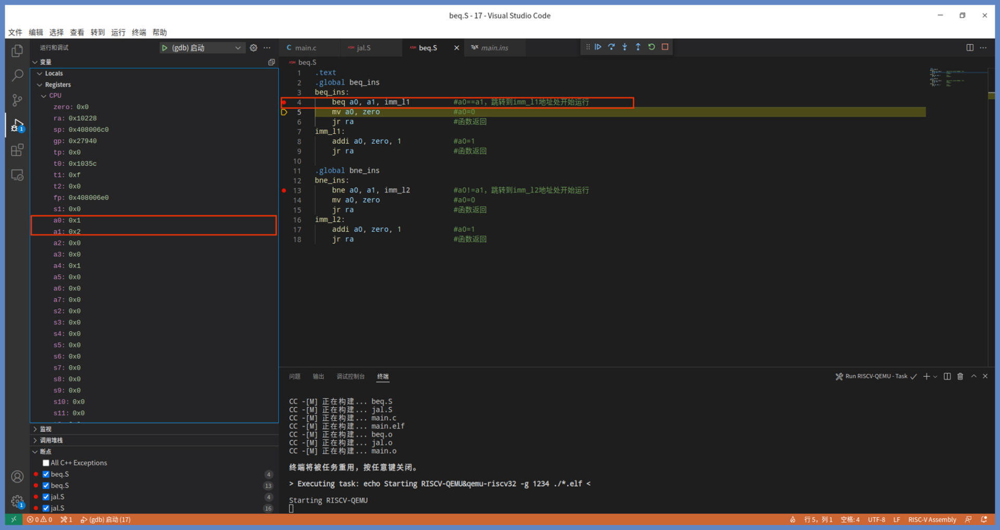
上图是执行“beq a0，a1，imm_l1”指令后的状态。由于a0、a1寄存器内容不相等，所以没有跳转到imm_l1处运行，而是继续顺序执行beq后面的下一条指令，最后返回到main函数中。
函数返回结果如下图所示：
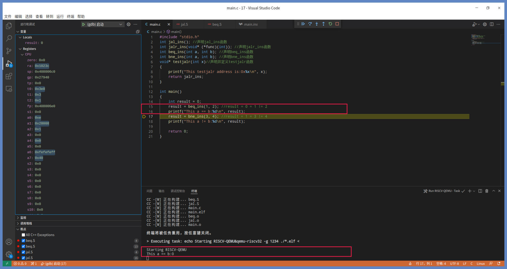
从图里我们能看到，首先会由main函数调用beq_ins函数，然后调用printf输出返回的结果，在终端中的输出为0。这个结果在我们的预料之中，也验证了beq指令的效果和我们之前描述的一致。
下面我们继续调试，就会进入bne_ins函数中，如下所示：
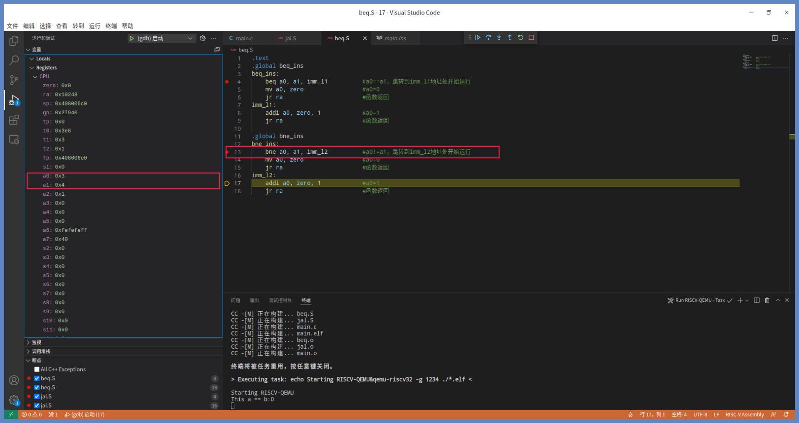
上图中是执行“bne a0，a1，imm_l2”指令之后的状态。同样因为a0、a1寄存器内容不相等，而bne指令是不相等就跳转。这时程序会直接跳转到imm_l2处运行，执行addi a0，zero，1指令，将a0寄存器置为1后，返回到main函数中，如下所示：
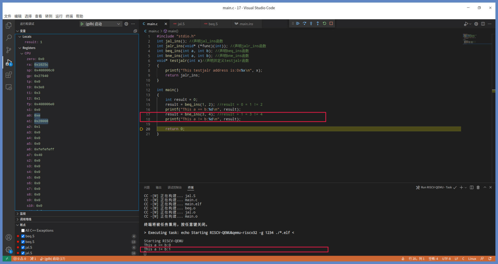
上图中第二个printf函数打印出bne_ins函数返回的结果，输出为1。bne指令会因为数据相等而跳转，将a0寄存器置为1，导致返回值为1，这个结果是正确的。
经过上面的调试验证，我们不难发现：其实bne是beq的相反操作，作为一对指令搭配使用，完成相等和不相等的流程控制。
小于则跳转：blt和bltu指令
有了bqe、bne有条件跳转指令后，就能实现C语言 ==和 != 的比较运算符的功能。但这还不够，除了比较数据的相等和不等，我们还希望实现比较数据的大小这个功能。
这就要说到小于则跳转的指令，即blt指令与bltu指令，bltu指令是blt的无符号数版本。它们的汇编代码书写形式如下：
blt rs1，rs2，imm
#blt 条件小于跳转指令
#rs1 源寄存器1
#rs2 源寄存器2
#imm 立即数
bltu rs1，rs2，imm
#bltu 无符号数条件小于跳转指令
#rs1 源寄存器1
#rs2 源寄存器2
#imm 立即数
和bqe、bne指令一样，上述代码中rs1、rs2可以是任何通用寄存器，imm是立即数（也可称为偏移量），占用13位二进制编码，它们同样没有目标寄存器，不会回写结果。
blt指令和bltu指令所完成的操作，可以用后面的伪代码描述：
//blt
if(rs1 < rs2) pc = pc + 符号扩展（imm << 1）
//bltu
if((无符号)rs1 < (无符号)rs2) pc = pc + 符号扩展（imm << 1）
你可以这样理解这两个指令。当rs1小于rs2时且rs1、rs2中为有符号数据，blt指令就会跳转到imm标号处运行。而当rs1小于rs2时且rs1、rs2中为无符号数据，bltu指令就会跳转到imm标号处运行。
我们同样通过写代码验证一下，加深理解。在beq.S文件中，我们用汇编写上blt_ins、bltu_ins函数，代码如下所示：
.global blt_ins
blt_ins:
blt a0，a1，imm_l3 #a0<a1，跳转到imm_l3地址处开始运行
mv a0，zero #a0=0
jr ra #函数返回
imm_l3:
addi a0，zero，1 #a0=1
jr ra #函数返回
.global bltu_ins
bltu_ins:
bltu a0，a1，imm_l4 #a0<a1，跳转到imm_l4地址处开始运行
mv a0，zero #a0=0
jr ra #函数返回
imm_l4:
addi a0，zero，1 #a0=1
jr ra #函数返回
blt_ins函数都做了什么呢？如果a0小于a1，则跳转到imm_l3处，将a0置1并返回，否则继续顺序执行将a0置0并返回。
接着我们来看bltu_ins函数的操作，如果a0中的无符号数小于a1中的无符号数，程序就会跳转到imm_l4处，将a0置1并返回，否则继续顺序执行，将a0置0并返回。
我们还是用VSCode打开工程目录，按下“F5”键来调试验证。下图是执行“blt a0,a1,imm_l3”指令之后的状态。
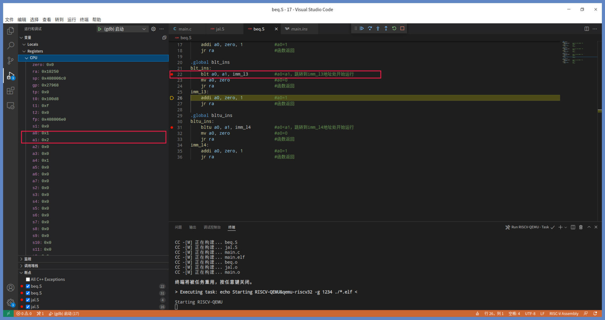
由于a0中的有符号数小于a1中的有符号数，而blt指令是小于就跳转，这时程序会直接跳转到imm_l3处运行，执行addi a0，zero，1指令，将a0寄存器置为1后，返回到main函数中。返回结果如下所示：
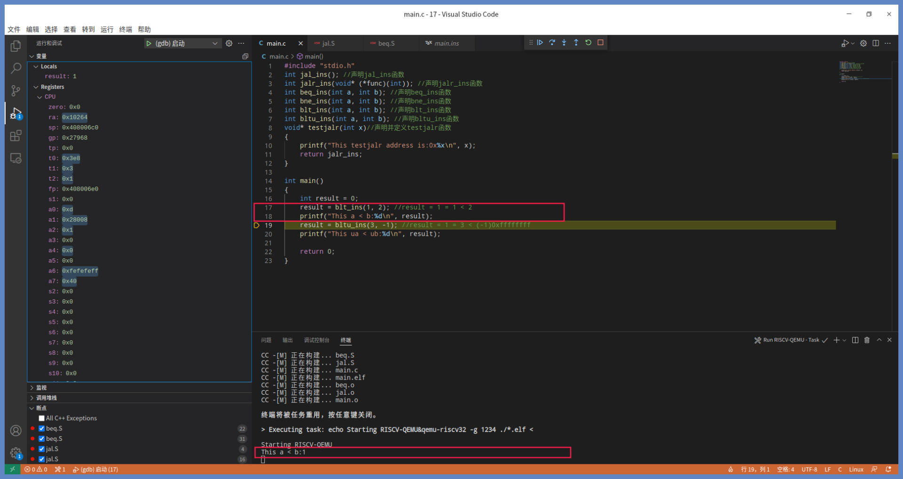
对照上图可以发现，main函数先调用了blt_ins函数，然后调用printf在终端上打印返回的结果，输出为1。这个结果同样跟我们预期的一样，也验证了blt指令的功能确实是小于则跳转。
我们再接再厉，继续调试，进入bltu_ins函数中，如下所示：
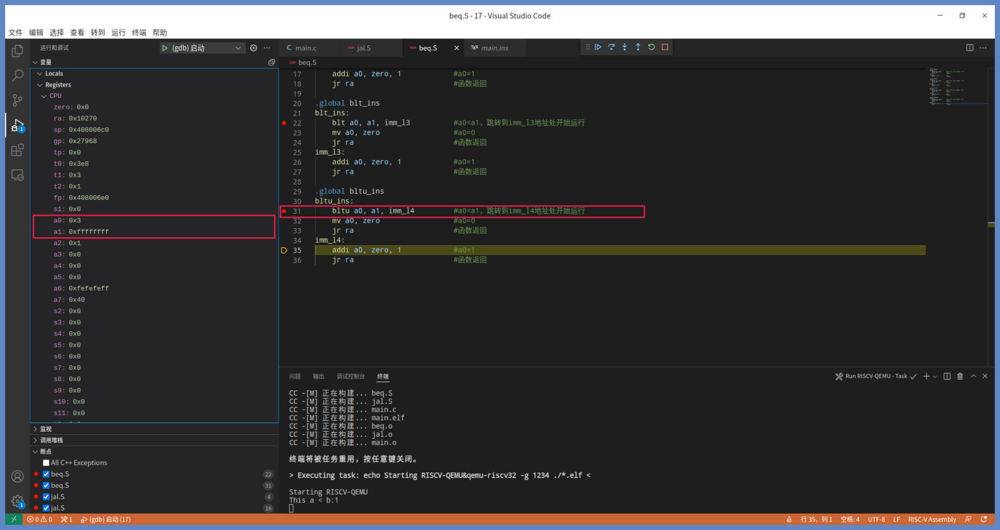
图里的代码表示执行“bltu a0，a1，imm_l4”指令之后的状态。
由于bltu把a0、a1中的数据当成无符号数，所以a0的数据小于a1的数据，而bltu指令是小于就跳转，这时程序就会跳转到imm_l4处运行，执行addi a0，zero，1指令，将a0寄存器置为1后，就会返回到main函数中。
对应的跳转情况，你可以对照一下后面的截图：
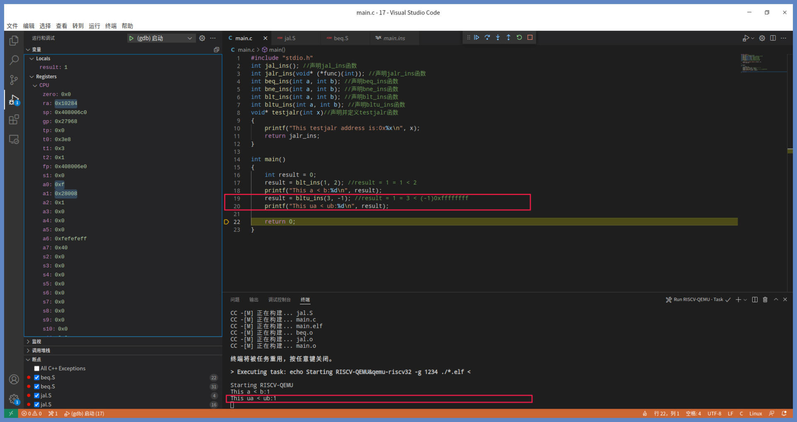
我们看到上图中调用bltu_ins函数传递的参数是3和-1，应该返回0才对。然而printf在终端上输出为1，这个结果是不是出乎你的意料呢？
我们来分析一下原因，没错，这是因为bltu_ins函数会把两个参数都当成无符号数据，把-1当成无符号数是0xffffffff，远大于3。所以这里返回1，反而是bltu指令正确的运算结果。
大于等于则跳转：bge和bgeu指令
有了小于则跳转的指令，我们还是需要大于等于则跳转的指令，这样才可以在C语言中写出类似”a >= b”这种表达式。在RISC-V指令中，为我们提供了bge、bgeu指令，它们分别是有符号数大于等于则跳转的指令和无符号数大于等于则跳转的指令。
这是最后两条有条件跳转指令，它们的汇编代码形式如下：
bge rs1，rs2，imm
#bge 条件大于等于跳转指令
#rs1 源寄存器1
#rs2 源寄存器2
#imm 立即数
bgeu rs1，rs2，imm
#bgeu 无符号数条件大于等于跳转指令
#rs1 源寄存器1
#rs2 源寄存器2
#imm 立即数
代码规范和前面四条指令都相同，这里不再重复。
下面我们用伪代码描述一下bge、bgeu指令，如下所示：
//bge
if(rs1 >= rs2) pc = pc + 符号扩展（imm << 1）
//bgeu
if((无符号)rs1 >= (无符号)rs2) pc = pc + 符号扩展（imm << 1）
我们看完伪代码就能大致理解这两个指令的操作了。当rs1大于等于rs2，且rs1、rs2中为有符号数据时，bge指令就会跳转到imm标号处运行。而当rs1大于等于rs2时且rs1、rs2中为无符号数据，bgeu指令就会跳转到imm标号处运行。
我们继续在beq.S文件中用汇编写上bge_ins、bgeu_ins函数，进行调试验证，代码如下所示：
.global bge_ins
bge_ins:
bge a0，a1，imm_l5 #a0>=a1，跳转到imm_l5地址处开始运行
mv a0，zero #a0=0
jr ra #函数返回
imm_l5:
addi a0，zero，1 #a0=1
jr ra #函数返回
.global bgeu_ins
bgeu_ins:
bgeu a0，a1，imm_l6 #a0>=a1，跳转到imm_l6地址处开始运行
mv a0，zero #a0=0
jr ra #函数返回
imm_l6:
addi a0，zero，1 #a0=1
jr ra #函数返回
结合上面的代码，我们依次来看看bge_ins函数和bgeu_ins函数都做了什么。先看bge_ins函数，如果a0大于等于a1，则跳转到imm_l5处将a0置1并返回，否则就会继续顺序执行，将a0置0并返回。
而bgeu_ins函数也类似，如果a0中无符号数大于等于a1中的无符号数，则跳转到imm_l6处将a0置1并返回，否则继续顺序执行，将a0置0并返回。
我们用VSCode打开工程目录，按“F5”键调试，情况如下：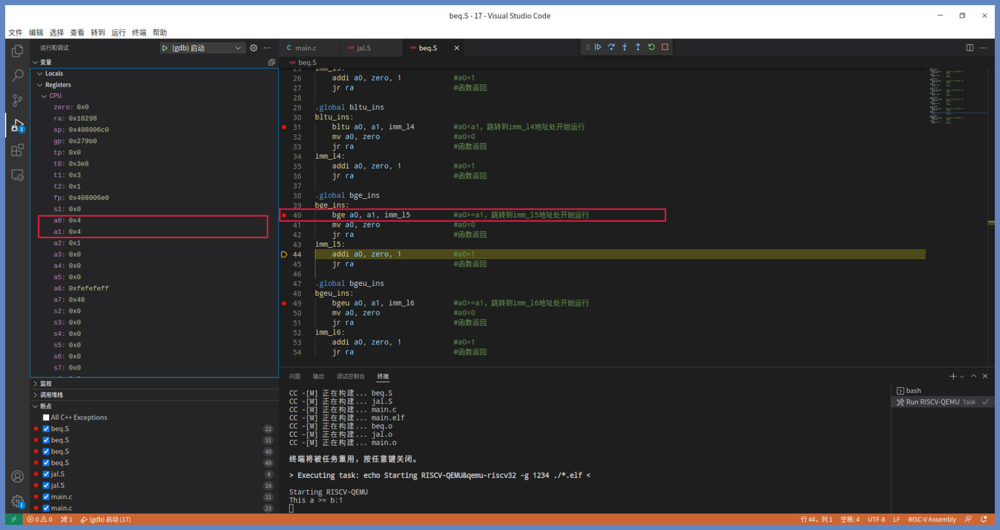
上图中是执行“bge a0，a1，imm_l5”指令之后的状态，由于a0中的有符号数，大于等于a1中的有符号数。而bge指令是大于等于就跳转，所以这时程序将会直接跳转到imm_l5处运行。执行addi a0，zero，1指令，将a0寄存器置为1后，就会返回到main函数中。
对照下图，可以看到调用bge_ins(4,4)函数后，之后就是调用printf，在终端上打印其返回结果，输出为1。
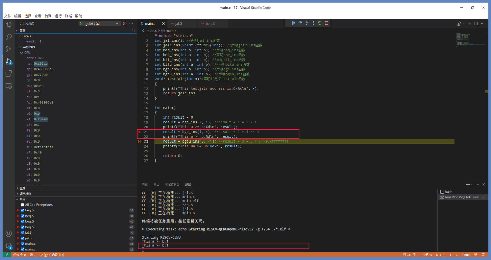
因为两个数相等，所以返回1，这个结果正确，也验证了bge指令的功能确实是大于等于则跳转。
下面我们继续调试，就会进入bgeu_ins函数之中，如下所示：
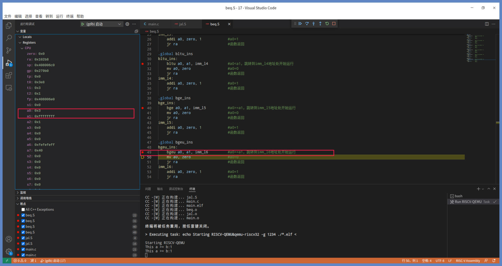
上图中是执行“bgeu a0，a1，imm_l6”指令之后的状态。
由于bgeu把a0、a1中的数据当成无符号数，所以a0的数据小于a1的数据。而bgeu指令是大于等于就跳转，这时程序就会就会顺序运行bgeu后面的指令“mv a0，zero”，将a0寄存器置为0后，返回到main函数中。
可以看到，意料外的结果再次出现了。你可能疑惑，下图里调用bgeu_ins函数传递的参数是3和-1，应该返回1才对，然而printf在终端上的输出却是0。
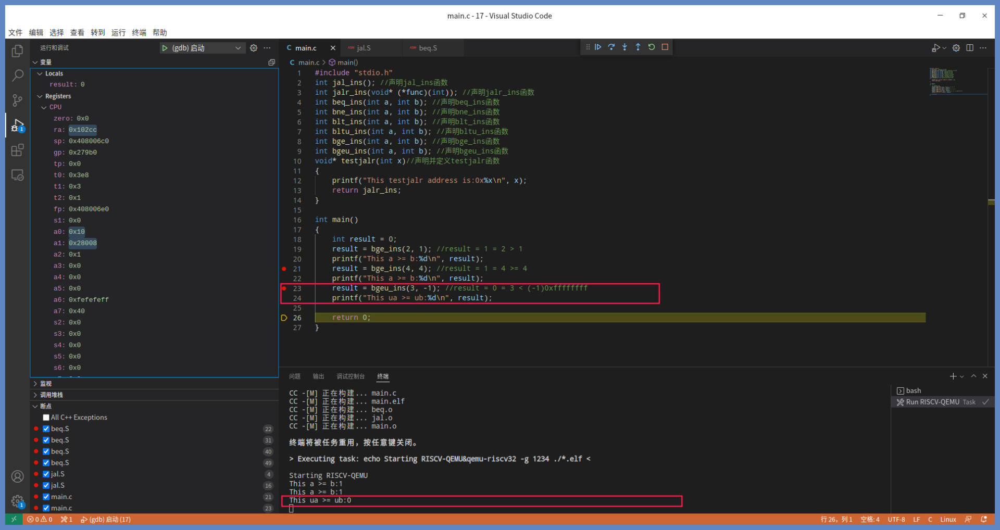
出现这样的情况，跟前面bltu_ins函数情况类似，bgeu_ins函数会把两个参数都当成无符号数据，把-1当成无符号数是0xffffffff，3远小于0xffffffff，所以才会返回0。也就是说，图里的结果恰好验证了bgeu指令是正确的。
到这里，我们已经完成了对beq、bne、blt、bltu、bge、bgeu指令的调试，熟悉了它们的功能细节，现在我们继续一起看看beq_ins、bne_ins、blt_ins、bltu_ins、bge_ins、bgeu_ins函数的二进制数据。
沿用之前查看jal_ins、jalr_ins函数的方法，我们将main.elf文件反汇编成main.ins文件，然后打开这个文件，就会看到这些函数的二进制数据，如下所示：
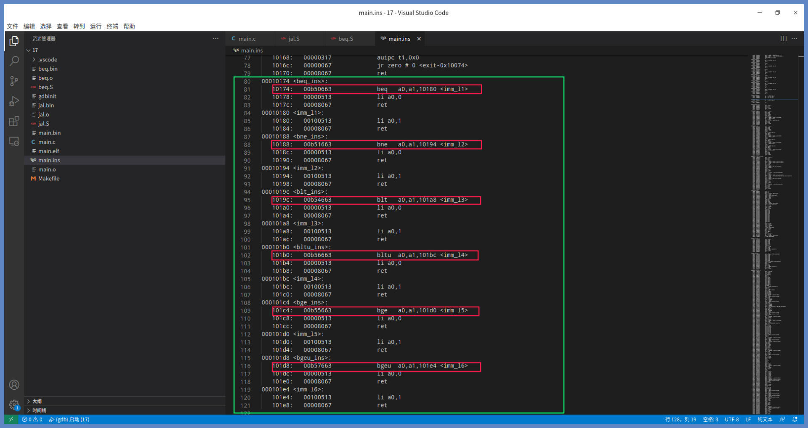
上图里的反汇编代码中使用了一些伪指令，它们的机器码以及对应的汇编语句、指令类型，我画了张表格来梳理。
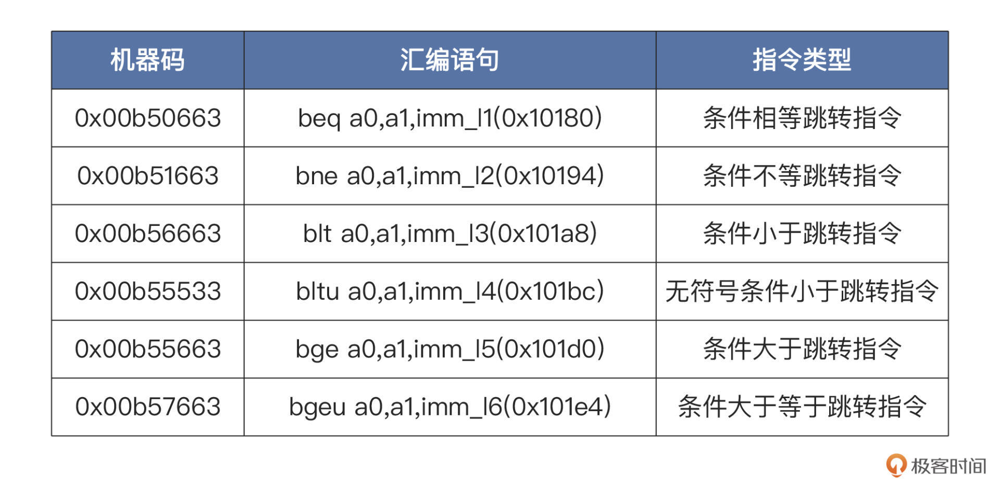- 有了这些机器码数据，我们同样来拆分一下这些指令各位段的数据，在内存里它们是这样编码的：
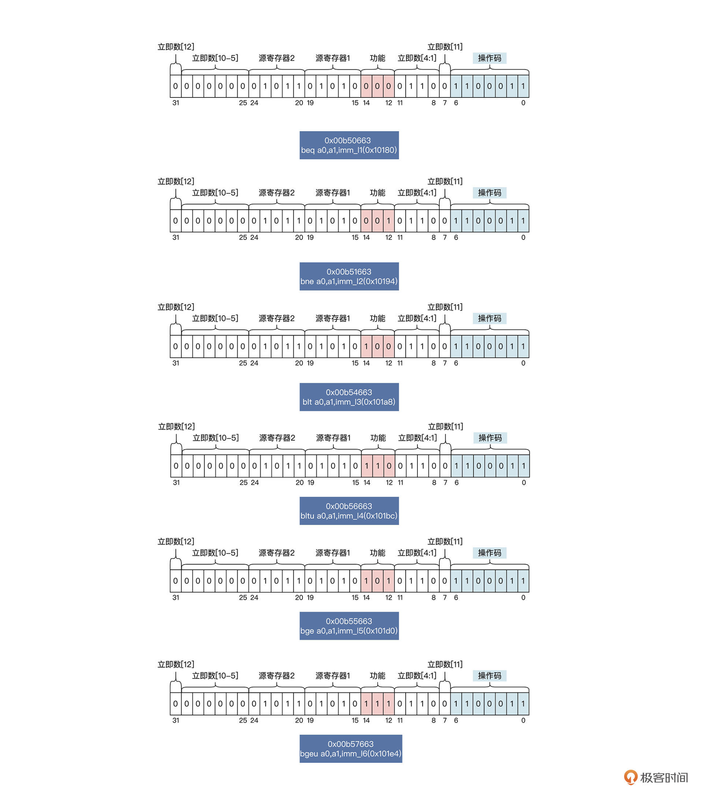
看完图片我们可以发现，bqe、bne、blt、bltu、bge、bgeu指令的操作码是相同的，区分指令的是功能码。
这些指令的立即数都是相同的，这和我们编写的代码有关，其数据正常组合起来是0b00000000110，这个二进制数据左移1位等于十六进制数据0xc。看看那些bxxx_ins函数代码，你就明白了，bxxx指令和imm_lxxx标号之间（包含标号）正好间隔3条，一条指令4字节，其偏移量正好是12，pc+12正好落在imm_lxxx标号处的指令上。
重点回顾
这节课就要结束了，我们做个总结。
RISC-V指令集中的有条件跳转指令一共六条，它们分别是beq、bne、blt、bltu、bge、bgeu。
bne和beq指令，用于比较数据是否相等，它们是一对相反的指令操作，搭配使用就能完成相等和不相等的流程控制。blt、bltu是小于则跳转的指令，bge、bgeu是大于等于则跳转的指令，区别在于有无符号数。这六条跳转指令的共性是，都会先比较两个源操作数，然后根据比较结果跳转到具体的偏移地址去运行。
这节课的要点我给你准备了导图，供你参考复习。
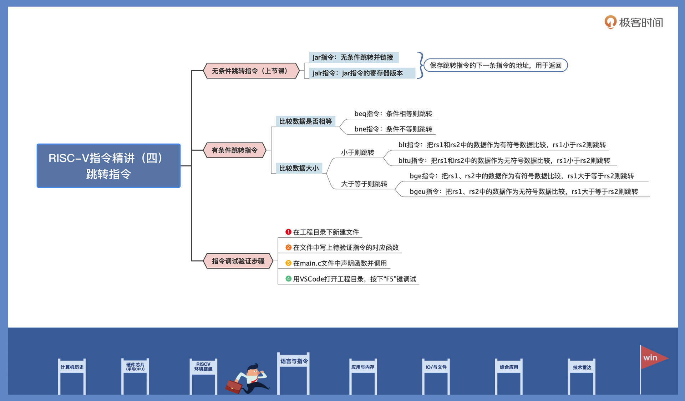
到这里，我们用两节课的时间掌握了RISC-V指令集的八条跳转指令。正是这些“辛勤劳作”的指令，CPU才获得了顺序执行之外的新技能，进而让工程师在高级语言中，顺利实现了函数调用和流程控制与比较表达式。
下节课我们继续挑战访存指令，敬请期待。
思考题
我们发现在RISC-V指令集中，没有大于指令和小于等于指令，这是为什么呢？
别忘了在留言区记录收获，或者向我提问。如果觉得课程还不错，别忘了推荐给身边的朋友，跟他一起学习进步。
© 2019 - 2023 Liangliang Lee. Powered by gin and hexo-theme-book.